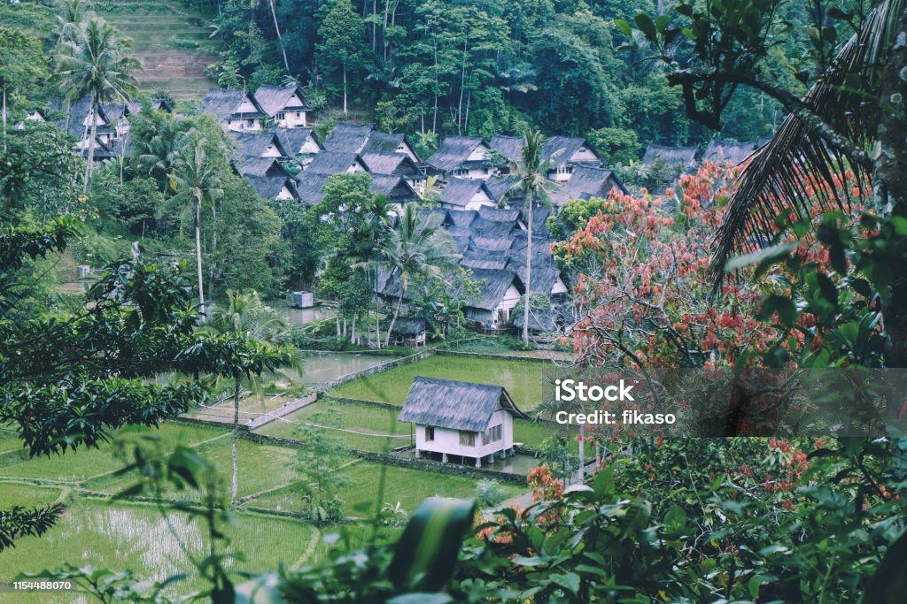
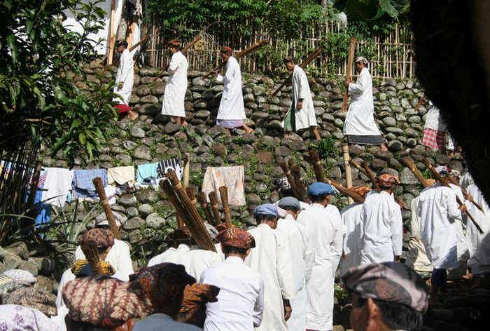
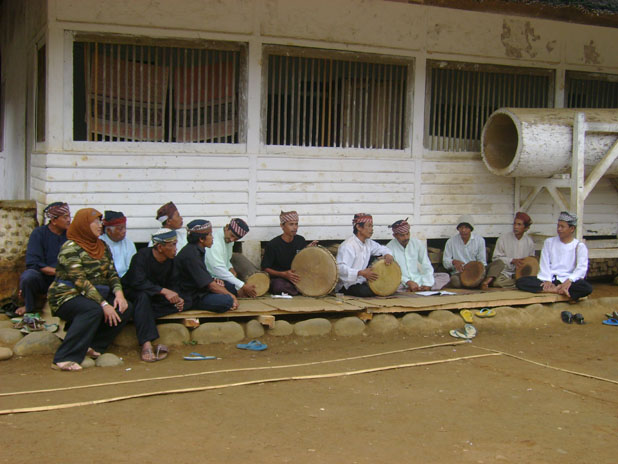

Sajarah

Kampung Naga (Desa Naga) mangrupa kampung adat anu masih lestari. Masarakatna masih nganut kana tradisi karuhunna. Aranjeunna nolak intervensi ti pihak luar upami ngaganggu sareng ngarusak kelestarian desa. Tapi, asal-usul kampung ieu sorangan teu jelas. Henteu aya sajarah anu jelas, iraha sareng saha pendirina sareng naon anu aya di balik dibentukna ieu kampung kalayan budaya anu masih kuat.
Warga kampung Naga sorangan nyebut sajarah kampungna salaku ᮕpaᮛᮩreuᮙ᮪m ᮇoᮘᮧᮁbor obor pareum. Pareum, ditarjamahkeun kana basa Indonesia, hartina maot, gelap. Sareng obor sorangan hartosna katerangan, cahaya, lampu. Lamun ditarjamahkeun sakeudeung, nyaeta, maot cahaya.
Adapun beberapa versi sejarah yang diceritakan oleh beberapa sumber diantaranya, pada masa kewalian Syeh Syarif Hidayatullah atau Sunan Gunung Jati, seorang abdinya yang bernama Singaparana ditugasi untuk menyebarkan agama Islam ke sebelah Barat. Kemudian ia sampai ke daerah Neglasari yang sekarang menjadi Desa Neglasari, Kecamatan Salawu, Kabupaten Tasikmalaya. Di tempat tersebut, Singaparana oleh masyarakat Kampung Naga disebut Sembah Dalem Singaparana. Suatu hari ia mendapat ilapat atau petunjuk harus bersemedi. Dalam persemediannya Singaparana mendapat petunjuk, bahwa ia harus mendiami satu tempat yang sekarang disebut Kampung Naga. Namun masyarakat kampung Naga sendiri tidak meyakini kebenaran versi sejarah tersebut, sebab karena adanya "pareumeun obor" tadi.
Geografis

Sacara administratif désa ieu aya di wewengkon Désa Neglasari, Kacamatan Salawu, Kabupatén Tasikmalaya, Propinsi Jawa Barat. Lokasi Kampung Naga teu jauh ti jalan gede anu ngahubungkeun Kota Garut jeung Kota Tasikmalaya. Ieu kampung ayana di lebak anu subur, wates wilayahna, beulah kuloneun Kampung Naga diwatesan ku leuweung karamat sabab di ieu leuweung aya kuburan karuhun masarakat Kampung Naga. Beulah kidul wawatesan jeung pasawahan rahayat, beulah kalér jeung wétan wawatesan jeung Ci Wulan anu sumber caina ti Gunung Cikuray di wewengkon Garut. Jarak ti Kota Tasikmalaya ka Kampung Naga kurang leuwih 30 kilométer, sedengkeun ti Kota Garut jarakna 26 kilométer. Pikeun nepi ka Kampung Naga ti jalan raya Garut-Tasikmalaya kudu turun tangga anu diwangun kana témbok (basa Sunda: sengked) tepi ka walungan Ciwulan anu lampingna kira-kira 45 derajat sarta jarakna kurang leuwih 500 méter. Teras nyandak jalan satapak sapanjang walungan Ciwulan dugi ka Kampung Naga.Nurutkeun data Désa Neglasari, beungeut lahan di Kampung Naga téh pabukitan jeung produktivitas taneuhna bisa disebutkeun subur. Legana lahan Kampung Naga anu aya salega hiji satengah héktar, anu lolobana dipaké pikeun perumahan, pakarangan, balong, jeung sésa-sésa dipaké pikeun tatanén paré anu dipanén dua kali sataun.
Agama jeng Tradisi
Agama jeng Kepercayaan Kampung Naga

Warga Kampung Naga sadayana ngaku Islam. Pangajaran Al Qur'an pikeun barudak di Kampung Naga dilaksanakeun dina malem Senén jeung Kemis, sedengkeun bacaan pikeun kolot dilaksanakeun dina malem Jumaah. Dina ngalaksanakeun rukun Islam anu kalima atawa ibadah haji, maranéhna nganggap teu kudu jauh-jauh ka Tanah Suci Mekah, tapi cukup ngalaksanakeun upacara Hajat Sasih anu waktuna saluyu jeung poé Haji, nyaéta unggal tanggal 10 Rayagung (Dzulhijjah). Nurutkeun kapercayaan masarakat Kampung Naga, upacara Hajat Sasih téh sarua jeung Idul Adha jeung Idul Fitri.
Nurutkeun kapercayaan masarakat Kampung Naga, ngalaksanakeun adat-istiadat anu diwariskeun ti karuhun hartina ngajénan karuhun atawa karuhun. Sagala hal anu henteu asalna tina ajaran arwah Kampung Naga, sarta naon-naon anu henteu dilakonan ku arwah dianggap tabu. Upama hal-hal ieu dilakukeun ku masarakat Kampung Naga, hartina ngalanggar adat, teu ngahargaan karuhun, pasti bakal nimbulkeun musibah. Kapercayaan masarakat Kampung Naga kana arwah masih kuat dicekel. Percaya kana ayana jurig cai, nyaéta roh-roh anu nyicingan cai atawa walungan, utamana bagian jero walungan ("leuwi"). Saterusna “ririwa” nyaéta roh anu resep ngaganggu atawa nyingsieunan jalma peuting, aya ogé anu disebut “kunti anak” nyaéta roh anu asalna ti ibu hamil anu tos maot, resep ngaganggu awéwé anu keur atawa rék ngalahirkeun. Samentara éta, tempat-tempat cicingna roh-roh ieu disebut ku masarakat Kampung Naga angker atawa angker pisan. Kitu deui tempat-tempat saperti makam Sembah Eyang Singaparna, Bumi Ageung jeung masjid mangrupa tempat-tempat anu dianggap karamat pikeun masarakat Kampung Naga.
Sistem kapercayaan masarakat Kampung Naga ngeunaan rohangan diwujudkeun dina kapercayaan yén rohangan atawa tempat anu watesna tangtu dikawasa ku kakuatan-kakuatan anu tangtu. Tempat-tempat atawa wewengkon-wewengkon anu miboga wates-wates dina katégori anu béda-béda saperti wates walungan, wates antara pakarangan hareup imah jeung jalan, tempat antara sawah jeung solokan, tempat mimiti asup cai atawa anu disebut Huluwotan, tempat di lamping pasir, tempat antara désa jeung leuweung, jeung sajabana, mangrupa tempat-tempat anu dicicingan ku pasukan anu tangtu. Wewengkon anu miboga wates-wates anu tangtu dicicingan ku roh-roh sarta dianggap angker atawa angker pisan. Éta sababna di éta wewengkon masarakat Kampung Naga resep ngajaga “sasajen” (sajén).
Tradisi Kampung Naga

Tabu, pantangan atau pamali bagi masyarakat Kampung Naga masih dilaksanakan dengan patuh khususnya dalam kehidupan sehari-hari, terutama yang berkenaan dengan aktivitas kehidupannya. Pantangan atau pamali merupakan ketentuan hukum yang tidak tertulis yang mereka junjung tinggi dan dipatuhi oleh setiap orang. Misalnya tata cara membangun dan bentuk rumah, letak, arah rumah,pakaian upacara, kesenian, dan sebagainya.
Bentuk rumah masyarakat Kampung Naga harus panggung, bahan rumah dari bambu dan kayu. Atap rumah harus dari daun nipah, ijuk, atau alang-alang, lantai rumah harus terbuat dari bambu atau papan kayu. Rumah harus menghadap kesebelah utara atau ke sebelah selatan dengan memanjang kearah Barat-Timur. Dinding rumah dari bilik atau anyaman bambu dengan anyaman sasag. Rumah tidak boleh dicat, kecuali dikapur atau dimeni. Bahan rumah tidak boleh menggunakan tembok, walaupun mampu membuat rumah tembok atau gedung (gedong).Rumah tidak boleh dilengkapi dengan perabotan, misalnya kursi, meja, dan tempat tidur. Rumah tidak boleh mempunyai daun pintu di dua arah berlawanan. Karena menurut anggapan masyarakat Kampung Naga, rizki yang masuk kedalam rumah melaui pintu depan tidak akan keluar melalui pintu belakang. Untuk itu dalam memasang daun pintu, mereka selalu menghindari memasang daun pintu yang sejajar dalam satu garis lurus.Di bidang kesenian masyarakat Kampung Naga mempunyai pantangan atau tabu mengadakan pertunjukan jenis kesenian dari luar Kampung Naga seperti wayang golek, dangdut, pencak silat, dan kesenian yang lain yang mempergunakan waditra goong. Sedangkan kesenian yang merupakan warisan leluhur masyarakat Kampung Naga adalah terbangan, angklung, beluk, dan rengkong. Kesenian beluk kini sudah jarang dilakukan, sedangkan kesenian rengkong sudah tidak dikenal lagi terutama oleh kalangan generasi muda. Namun bagi masyarakat Kampung Naga yang hendak menonton kesenian wayang, pencak silat, dan sebagainya diperbolehkan kesenian tersebut dipertunjukan di luar wilayah Kampung Naga.